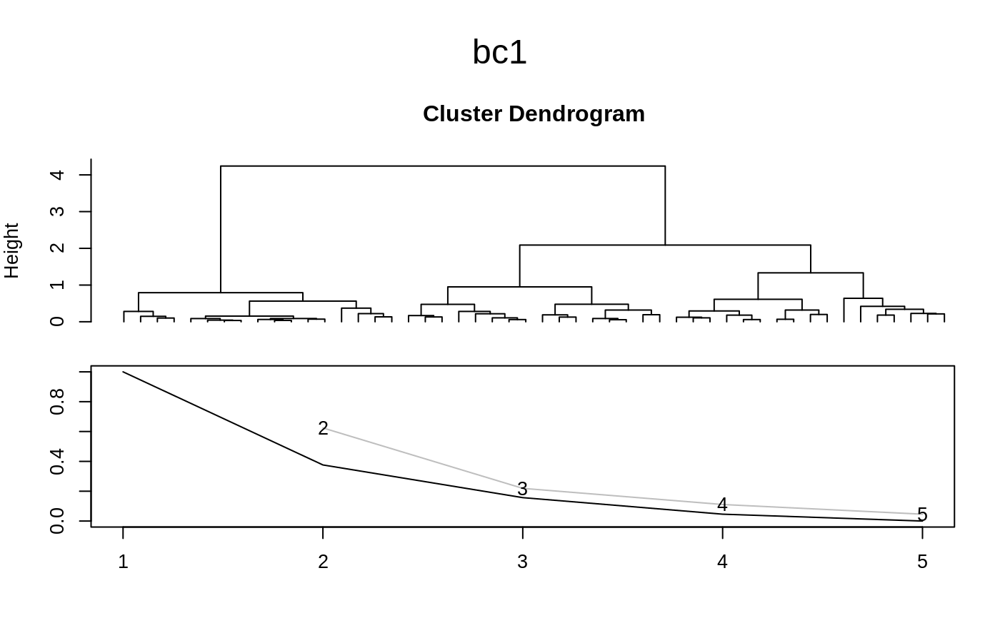

bclust.RdCluster the data in x using the bagged clustering
algorithm. A partitioning cluster algorithm such as
kmeans is run repeatedly on bootstrap samples from the
original data. The resulting cluster centers are then combined using
the hierarchical cluster algorithm hclust.
bclust(x, centers=2, iter.base=10, minsize=0, dist.method="euclidian", hclust.method="average", base.method="kmeans", base.centers=20, verbose=TRUE, final.kmeans=FALSE, docmdscale=FALSE, resample=TRUE, weights=NULL, maxcluster=base.centers, ...) hclust.bclust(object, x, centers, dist.method=object$dist.method, hclust.method=object$hclust.method, final.kmeans=FALSE, docmdscale = FALSE, maxcluster=object$maxcluster) # S3 method for bclust plot(x, maxcluster=x$maxcluster, main, ...) centers.bclust(object, k) clusters.bclust(object, k, x=NULL)
| x | Matrix of inputs (or object of class |
|---|---|
| centers, k | Number of clusters. |
| iter.base | Number of runs of the base cluster algorithm. |
| minsize | Minimum number of points in a base cluster. |
| dist.method | Distance method used for the hierarchical
clustering, see |
| hclust.method | Linkage method used for the hierarchical
clustering, see |
| base.method | Partitioning cluster method used as base algorithm. |
| base.centers | Number of centers used in each repetition of the base method. |
| verbose | Output status messages. |
| final.kmeans | If |
| docmdscale | Logical, if |
| resample | Logical, if |
| weights | Vector of length |
| maxcluster | Maximum number of clusters memberships are to be computed for. |
| object | Object of class |
| main | Main title of the plot. |
| ... | Optional arguments top be passed to the base method
in |
First, iter.base bootstrap samples of the original data in
x are created by drawing with replacement. The base cluster
method is run on each of these samples with base.centers
centers. The base.method must be the name of a partitioning
cluster function returning a list with the same components as the
return value of kmeans.
This results in a collection of iter.base *
base.centers centers, which are subsequently clustered using
the hierarchical method hclust. Base centers with less
than minsize points in there respective partitions are removed
before the hierarchical clustering.
The resulting dendrogram is then cut to produce centers
clusters. Hence, the name of the argument centers is a little
bit misleading as the resulting clusters need not be convex, e.g.,
when single linkage is used. The name was chosen for compatibility
with standard partitioning cluster methods such as
kmeans.
A new hierarchical clustering (e.g., using another
hclust.method) re-using previous base runs can be
performed by running hclust.bclust on the return value of
bclust.
bclust and hclust.bclust return objects of class
"bclust" including the components
Return value of the hierarchical clustering of the
collection of base centers (Object of class "hclust").
Vector with indices of the clusters the inputs are assigned to.
Matrix of centers of the final clusters. Only useful, if the hierarchical clustering method produces convex clusters.
Matrix of all iter.base * base.centers
centers found in the base runs.
Friedrich Leisch. Bagged clustering. Working Paper 51, SFB ``Adaptive Information Systems and Modeling in Economics and Management Science'', August 1999. http://epub.wu.ac.at/1272/1/document.pdf
#> Committee Member: 1(1) 2(1) 3(1) 4(1) 5(1) 6(1) 7(1) 8(1) 9(1) 10(1) #> Computing Hierarchical Clusteringplot(bc1)#> #> 1 2 3 #> 55 50 45centers.bclust(bc1, 3)#> [,1] [,2] [,3] [,4] #> [1,] 5.864206 2.733409 4.270903 1.3553936 #> [2,] 5.012676 3.447646 1.455746 0.2460157 #> [3,] 6.929481 3.118511 5.830742 2.0791577